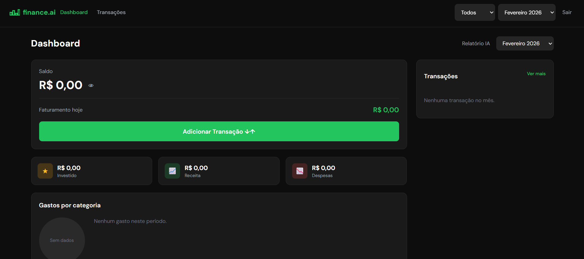
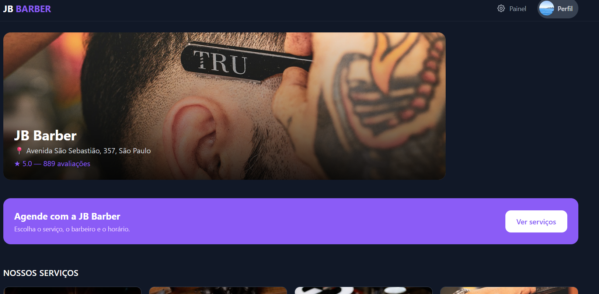
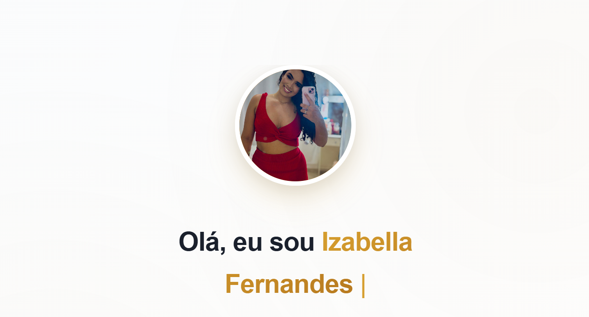
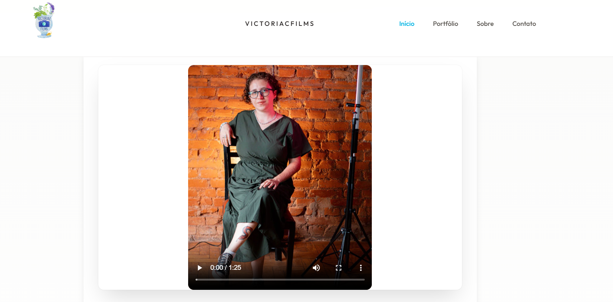

Atendimento próximo
Você conversa diretamente com quem desenvolve sua solução.
Indaiatuba/SP e atendimento remoto
A JB DEV transforma objetivos de negócio em experiências digitais claras, rápidas e preparadas para gerar oportunidades.
Confiança construída no processo
Você conversa diretamente com quem desenvolve sua solução.
Decisões alinhadas ao seu negócio, sem pacotes genéricos.
Atendimento em Indaiatuba/SP e para clientes de outras regiões.
Serviços
Da presença digital à automação de processos, construímos soluções claras, confiáveis e prontas para evoluir.
Apresente sua empresa com clareza, credibilidade e uma jornada pensada para gerar contatos.
Páginas focadas em campanhas, lançamentos e ofertas com uma mensagem direta e comercial.
Ferramentas sob medida para organizar rotinas, atendimentos, dados e processos internos.
Experiências de compra simples, confiáveis e preparadas para apresentar seus produtos.
Melhorias de desempenho, usabilidade e estrutura para sites que precisam entregar mais.
Acompanhamento técnico para manter sua solução atualizada e alinhada ao crescimento do negócio.
Não sabe qual solução faz mais sentido?
Conversar sobre minha necessidadeComo trabalhamos
Você acompanha as decisões e entende o caminho do projeto do início à entrega.
Entendemos seu negócio, público, desafio e prioridade.
Definimos escopo, conteúdo e a solução mais adequada.
Design e desenvolvimento avançam com validações objetivas.
Testamos, publicamos e orientamos você sobre os próximos passos.
Projetos selecionados
Uma seleção de sites e sistemas que demonstra a variedade de projetos desenvolvidos pela JB DEV.

Aplicação web
Gestão financeira pessoal com visão de receitas, despesas, orçamentos e indicadores em um único ambiente.
Conhecer projeto
Sistema de agendamento
Agendamento de serviços, profissionais e horários com área administrativa para a barbearia.
Conhecer projeto
Sistema de agendamento
Portfólio de serviços integrado à escolha de datas e horários, com gestão de agendamentos.
Conhecer projeto
Site e portfólio
Experiência visual para apresentar fotografia, identidade, portfólio e contato de forma envolvente.
Conhecer projeto
Cardápio digital
Navegação por categorias, busca e apresentação organizada dos produtos para facilitar pedidos.
Conhecer projeto
Landing page
Apresentação de serviços, trabalhos e contato para fortalecer a presença digital do estúdio.
Conhecer projetoQuer ver sua ideia se transformar em um projeto real?
Planejar meu projetoPor que a JB DEV
Cada recurso precisa apoiar um objetivo do negócio ou melhorar a experiência do cliente.
Você sabe o que está sendo feito, por que foi escolhido e qual é o próximo passo.
A solução é pensada para funcionar com clareza em computadores, tablets e celulares.
Projetos organizados para receber melhorias conforme seu negócio ganha novas necessidades.

Sobre a JB DEV
A JB DEV desenvolve sites, sistemas e soluções digitais para empresas e profissionais que querem fortalecer sua presença, organizar processos ou tirar uma ideia do papel.
À frente da empresa, Jonathan Balieiro acompanha cada projeto diretamente e combina desenvolvimento, visão de produto e cuidado visual em todas as entregas.
Depoimentos
Relatos preservados do portfólio anterior da JB DEV.
“Simplesmente transformador! A atenção aos detalhes e a agilidade no atendimento superaram todas as expectativas.”
“O Jonathan desenvolveu meu site com muito cuidado. O resultado superou minhas expectativas e meus clientes adoram a facilidade de navegação.”
“Trabalho impecável! Um site que representa minha marca e facilita o contato com meus clientes.”
Perguntas frequentes
Respostas diretas sobre o início de um projeto com a JB DEV.
Sites institucionais, landing pages, lojas virtuais, sistemas web e melhorias em projetos existentes.
Não. O atendimento pode ser presencial em Indaiatuba/SP e remoto para clientes de outras cidades e regiões.
Conte sua necessidade pelo WhatsApp ou formulário. Após entender objetivo e escopo, a JB DEV orienta os próximos passos.
Sim. É possível avaliar otimizações, correções, novas funcionalidades e evolução técnica conforme o estado atual do projeto.
Ainda tem alguma dúvida?
Falar com a JB DEVSeu próximo projeto começa com uma conversa
Conte o que você precisa. A JB DEV ajuda a transformar o desafio em um caminho claro.
Começar pelo WhatsApp